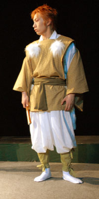

衣装ラフ
退魔師公演用に作成しました衣装ラフです。
衣装は、このラフを元に動きやすさや全体的な色味、立体にしたときの美しさを検討していき本番のモノを作ります。
故にこのラフのイラストと出来上がったものが結構違うなんて事も多々。
でも、ラフを作らないと衣装製作者が大変に困ります（今回の公演ではヤスアキ、御屋形様、辰妃（蛇）の衣装ラフがない状態で進めたので衣装製作者に大変お手数をおかけしました････すいません。）
本物の衣装とは違う、最初のイメージイラストを公開いたします。
人間チーム
貴人
■変更点
・全体的の雰囲気をみて、色味を青から緑へ。
・脚絆の色を、濃い茶色に。
・上着部分に縁取りを追加。
■衣装デザインからの一言
主人公ががらっぱちなので、品の良いイメージでデザインしました。
また、諸々の設定により、ほんの少しだけ他の人間達よりも古めの格好を意識したつもりです。
身長のある役者さんだったので、男性なのですが腰帯を少し高めに巻いていただきました。

退魔師チーム
欝塁
■変更点
・水干の紐飾りのかわりに、細工を追加。
■衣装デザインからの一言
退魔師一派なので、黒の水干と黒の袴は揃いで。
あとは、各キャラの性格付けで決めていきました。
欝塁の場合は、真面目で気品があるように、ということで、きちんと着る、色はムラサキ系というところのみを決めて、細かいところは製作者様におまかせしてしまいました。
一番考えるのが、楽だったのが欝塁でした。
神荼
■変更点
・飾り系を変更。
■衣装デザインからの一言
欝塁と同じく、水干と袴は揃いで。
あとは、気だるい雰囲気を出すために、わざと片袖を脱いだり、だるっとする感じに。
衣装ラフを書いていて、一番楽しかったのがこの神荼でした。
妖怪チーム
須勢理
■変更点
・良い布があったので、メインのタレを色味変更。
・帯部分の布を削除。
■衣装デザインからの一言
とにかく可愛く+偉い人に見えるように！をコンセプトにデザイン、ピンク+キラキラでイメージしたかんじです。
デザイン画から一番スムーズに制作に入れたのが、たぶん須勢理姫様のお衣装だったと思われます。
実は、この前垂れの布は総レースでして、製作者様が一目見た瞬間に「ヒメ様の前垂れの布はこれだっ！」と値段に糸目をつけず購入したという逸品。（故に、多分今回衣装の中で一番高い布地をつかっております）
人気の衣装でした。
烏丸
■変更点
・全体的な雰囲気に似合わなかったので、マントを留袖に変更。
・上着変更に基づき、中着をタートルタンクから袖なし着物に変更。
・ベルトの色を黒に変更。
・手甲を削除。
■衣装デザインからの一言
衣装デザインから、一番かわったのがこの烏丸の衣装だとおもわれます。
実は、最初普通にマントを作っていただいていたのですが、役者さんに着せてみたところ、どうしてもイメージにあわず無理を言って「黒留袖（裏地は赤）+着物」にデザイン変更をさせていただきました。
また、裾をふむだの、袖が引っかかるだの、一番文句を言われた衣装です。
・・・・・・・すいません。
狐次郎
 ■変更点
・都合上ふさふさ飾りがなくなる。
■衣装デザインからの一言
須勢理姫さまの次に、すんなりと製作できた衣装じゃないかと思われます（作ったのは私ではないので、わかりませんが）
妖怪なので、平安系をイメージしてデザイン、重ね着しているので見た目以上にあつかったようです。
この衣装の一番の敵は、ファーの抜け毛でした。
これがまた、すごく舞うんです・・・・・・・・・。
阿狛
■変更点
・左右反転
・ころげまわるので露出控えめに変更。
・ころげまわるのでスカート追加。
■衣装デザインからの一言
阿狛の衣装はデザインの時に本当に最後まで難航しておりました。
とにかく格闘系女の子キャラなので露出を高くしよう！というコンセプトだったのですが、芝居上床をはいずりまわることになり・・・・・・さすがに色んなものが危険だったので、色々と追加されていきました。
ちなみに、ナウシカルーズというのは某有名アニメのヒロインがはいているブーツのような形のルーズソックスを私が勝手に呼んでいる名称です。
理解してくれる人が、あまりいませんでした。
ショック。
吽狛
■変更点
・左右反転。
■衣装デザインからの一言
阿狛と同じく、こちらもデザイン時に難航した衣装です。
デザインが決まってしまってからはスムーズにいったのですが、さらしを白から黒に染めるのに難航・・・・・結局灰色程度までしか染まらなかったのが残念です。
おみな
■変更点
・着物が派手になったので、掛け襟なくなる。
・飾り物が追加。
・殺陣がなくなったので、鎖がなくなる。
・見苦しかったので、脚絆追加。
■衣装デザインからの一言
おみなちゃんの衣装は、イメージを伝えた後は本当に製作者様に まかせっきりにいたしました。
その時伝えたイメージは
「ゴリエちゃんみたいなの。」
・・・・・。
本当に、本当に製作者様には頭の下がる想いでゴザイマス。はい。
|